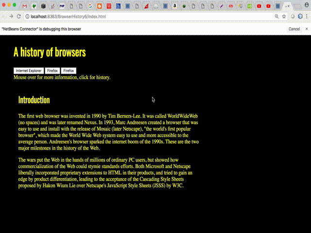

For this WOD, you will start with BrowserHistory3 and split the one page, three column “History of Browsers” web page into four separate web pages: a front page with the Introduction and three buttons which link to three other pages containing the history of those three browsers. When the mouse moves over a button, it displays the corresponding browser icon in the area below the buttons.
Here is how the dynamic page should look and work:

Here are the specifications:
<div>’s in to each respective file. Remove the <div>’s. Copy the style sheet link into each of the these files. Leave the Introduction material in file index.html<li>s to <input type="button"> and set the first button value to FireFox, second to Chrome, and third to Internet Explorer. Keep the href attributes for now.onclick="window.location.href = 'firefox.html'"onmouseover ="imgbox.innerHTML='<img src=http://server.com/chrome_image.jpg width=200px height=200px>'" (Note that the URL is just an example and not what you will use exactly.)Hint: It is suggested that you change just one anchor tag first. Test it, and when it works, copy it twice then copy and paste the href and img tags from the old <li>’s.
Hint2: The quotes for the javascript attribute values (e.g. onmouseclick) can be tricky here. The suggested approach is to use double-quotes " for attributes and single-quotes ' for javascript strings used inside the double-quotes. In general you can remove all the quotes for HTML used in javascript. For example, you can set the html <img src="http://server.com/an image.jpg" width="100px" hight="100px"> as javascript string for innerHTML as onmouseover="someElement.innerHTML='<img src=http://server.com/an image.jpg width=100px hight=100px>'"
Rx: <20 min Av: 30 min Sd: 40 min DNF: 40+ min
If you get stuck you can see a few hints (well, pretty much the whole solution) at here.